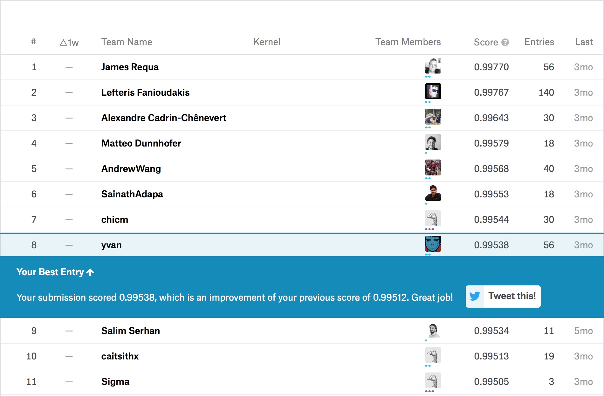
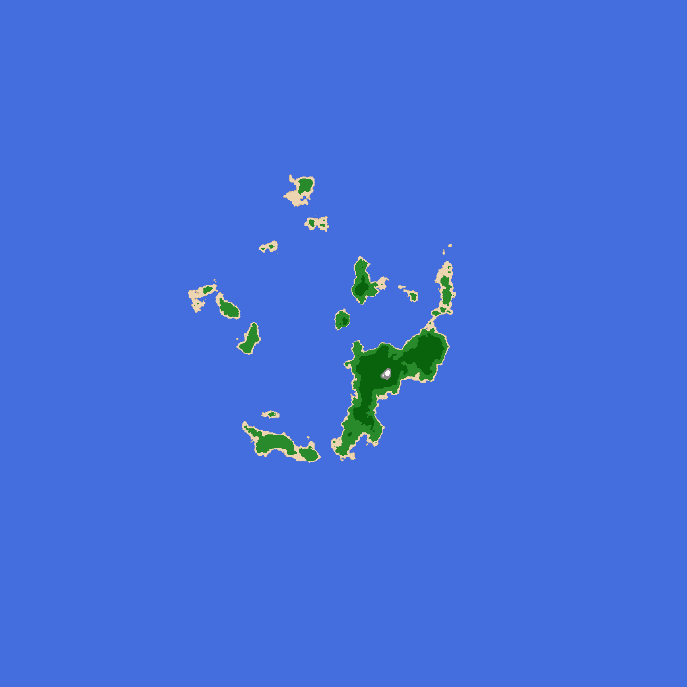
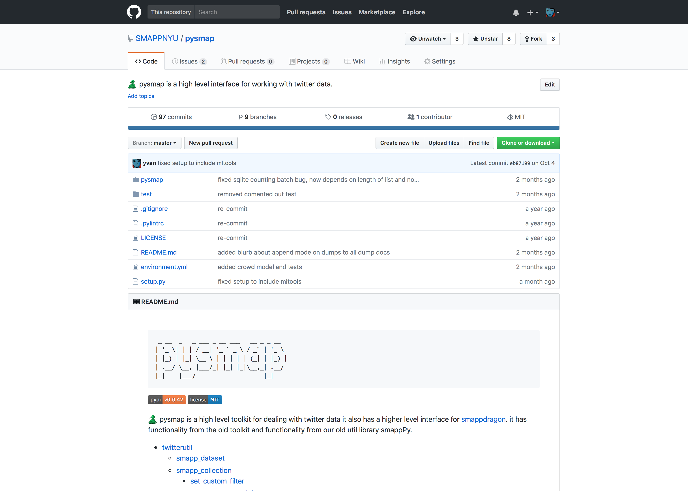
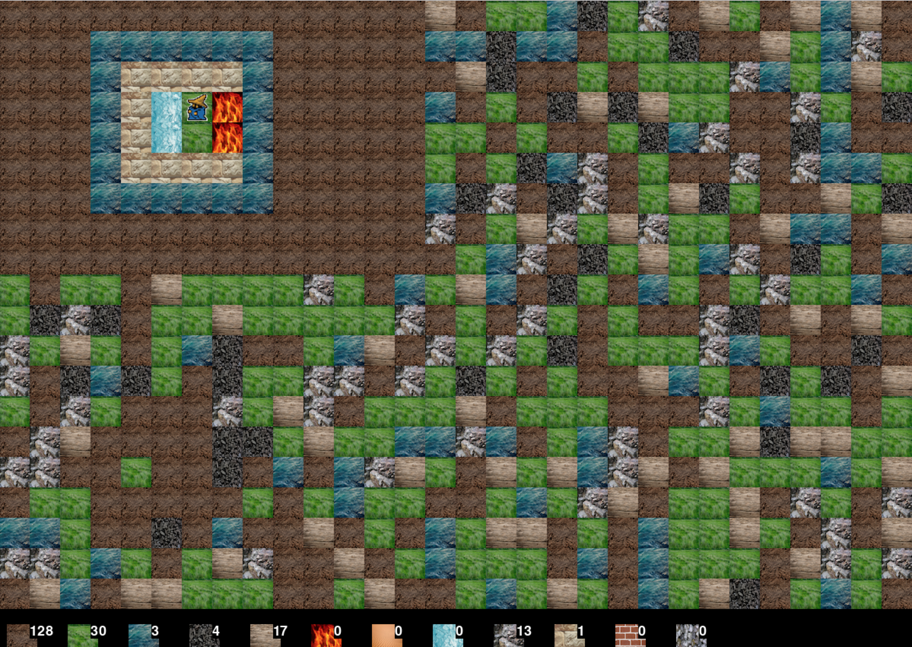
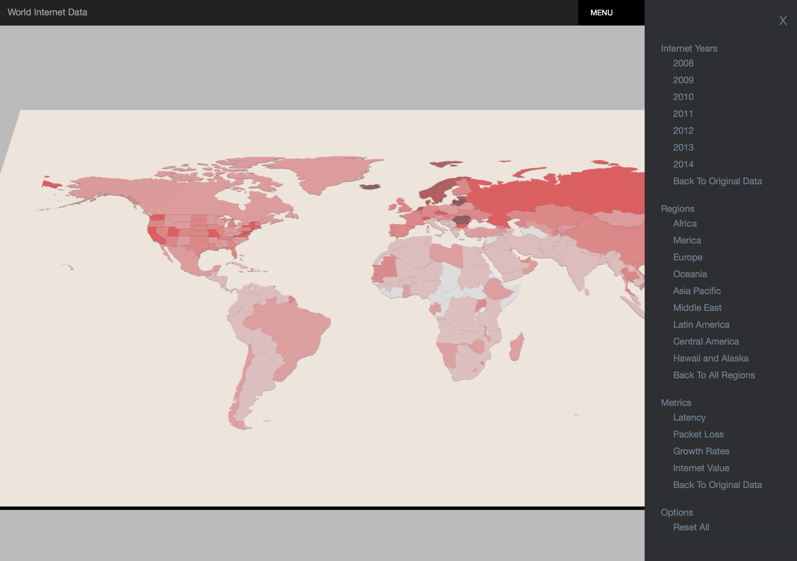
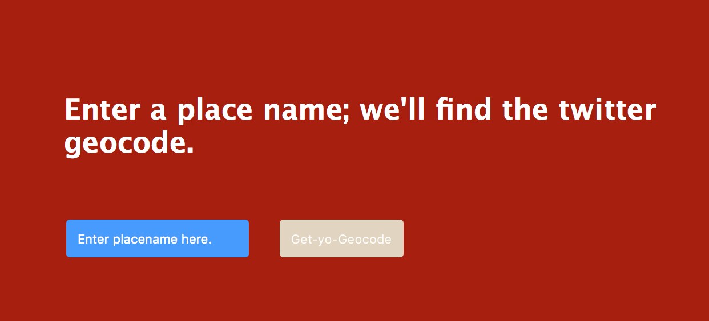

Kaggle 8th Place Solution for identifying invasive species of hydrangea:

Generating Archipelagos with perlin noise and spherical gradients:

hexlist.com: a simple website for keeping track of lists of links:
pysmap and smappdragon, toolsets for manipulating large json streams for researchers at nyu:

minecraft2d a little sandbox game written in pygame:

internet speed datamap (give it a moment to load it's a free dyno):

geotweetlookup looks up the twitter geocode for a place:
